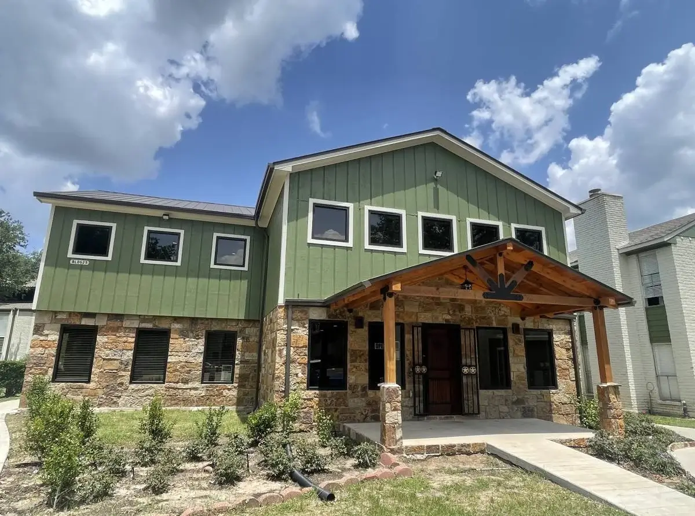

Built for Lenders, Special Servicers & Multifamily Owners
A Houston-based operating platform for distressed, transitional, and lender-controlled Class B & C multifamily assets. Gatesco Steward Partners is the client-facing arm of Gatesco, Inc. — we stabilize, reposition, and maximize value with in-house property management, maintenance, asset management, and construction renovation services.
Gatesco Steward Partners is the client-facing arm of Gatesco, Inc. We stabilize, reposition, and maximize value on apartment communities with the full weight of our in-house property management, maintenance, asset management, and construction renovation services.
Execution is everything.

Gatesco Steward Partners is built for moments when a standard management transition is not enough. The mandate is to protect collateral, stabilize operations, and create a path to exit or long-term ownership.
Property lacks capital for repairs, payroll, utilities, or critical maintenance.
Occupancy, collections, maintenance, or resident relations has broken down.
A neutral operator is needed to secure the asset and restore controls.
The asset must be repaired, cleaned up, and stabilized before sale.
The assignment is not merely property management. It is collateral protection under time pressure for multifamily owners that need immediate, disciplined leadership.
Operate first. Advise second.

GSP brings Gatesco's operating muscle to third-party assignments: same platform, same systems, same construction depth, lender-oriented governance.
10,800+ units across Greater Houston
Property management, maintenance, asset management, construction
PM teams, crews, vendors, and materials already in-market
Budgets, variance reporting, approvals, lender deliverables
Decades of operating experience in Class C & B assets across Greater Houston
The platform is designed to reduce handoffs: operating decisions, construction execution, asset oversight, and lender reporting remain connected.
Leasing, resident relations, maintenance, compliance, staffing
Learn more → 02Business plans, budgets, market positioning, lender interface
Learn more → 03Unit turns, full building rehab, deferred maintenance clearance
Learn more → 04Monthly statements, dashboards, variance narratives, capex tracking
Learn more →Execution is everything.
A disciplined playbook after decades of operating distressed and transitional multifamily assets across Greater Houston.
Whether you are onboarding a single distressed asset, preparing for receivership, or evaluating a lender-controlled portfolio, our team is ready to discuss scope, timing, and reporting requirements.